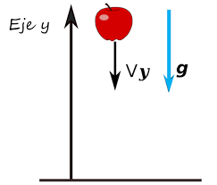
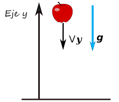
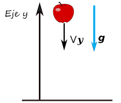

Aprender los principios fundamentales de los cultivos hidropónicos y cómo aplicarlos para cultivar plantas de manera eficiente y sostenible sin tierra, utilizando agua y nutrientes.
Un cultivo hidropónico es un método de cultivo de plantas que se realiza sin tierra, utilizando agua y
nutrientes disueltos en una solución acuosa. En lugar de suelo, las raíces de las plantas se sumergen en la
solución acuosa, donde absorben los nutrientes necesarios para su crecimiento.
Este método de cultivo se puede hacer en diferentes tipos de sistemas, incluyendo sistemas de riego por goteo, sistemas de película
nutriente, sistemas de flujo y reflujo, entre otros. La hidroponía permite el cultivo de plantas de manera
eficiente, controlada y sostenible, y se utiliza en una amplia variedad de aplicaciones, incluyendo la
producción comercial de hortalizas, frutas y flores, la investigación científica y la educación.
Los cultivos hidropónicos pueden ayudar a combatir la crisis alimentaria al permitir la producción de alimentos de
manera más eficiente y sostenible, lo que puede aumentar el acceso a alimentos saludables y asequibles en áreas donde el
suelo es pobre o el clima es adverso.
La hidroponía también puede ayudar a reducir la dependencia de los métodos de
cultivo tradicionales, que pueden ser ineficientes y requieren grandes cantidades de agua y fertilizantes.
Además, al
cultivar alimentos sin suelo, se pueden reducir los riesgos de enfermedades del suelo y contaminación química en los
cultivos, la hidroponía puede ser una solución prometedora para mejorar la producción de alimentos y hacer
frente a la crisis alimentaria.
Entender y aplicar los conceptos básicos de la física para tenerlos en cuenta al momento de la realización de cultivos hidropónicos.
Los vectores son herramientas matemáticas utilizadas para representar magnitudes físicas que tienen una dirección y una magnitud. Un vector se representa como una flecha con una longitud que representa la magnitud de la cantidad física y una dirección que representa la dirección de la cantidad física.
El movimiento rectilíneo uniforme (MRU) es un tipo de movimiento en el que un objeto se mueve a una velocidad constante en línea recta. En el MRU, la velocidad del objeto es constante y no cambia con el tiempo.
El movimiento rectilíneo uniformemente acelerado (MRUA) es un tipo de movimiento en el que un objeto se mueve en línea recta y su velocidad cambia a una tasa constante. En el MRUA, la velocidad del objeto cambia con una aceleración constante y su trayectoria es una línea recta.
La caída libre es un tipo de movimiento en el que un objeto se mueve hacia abajo bajo la influencia de la gravedad. En la caída libre, un objeto se mueve con una aceleración constante debido a la influencia de la gravedad. La aceleración de la gravedad en la superficie de la Tierra es de aproximadamente 9.8 metros por segundo cuadrado, y la velocidad de un objeto en caída libre aumenta a medida que cae.
En la hidroponía, se utilizan soluciones acuosas para cultivar plantas sin tierra. Para que los cultivos hidropónicos crezcan y prosperen, es necesario mantener un equilibrio adecuado de nutrientes en la solución, así como un suministro constante de agua y oxígeno. Los conceptos de física pueden ser útiles en la realización de cultivos hidropónicos de las siguientes maneras:
● Vectores: Util para la determinación de la dirección y la magnitud de las fuerzas que actúan sobre los cultivos hidropónicos, como al gravedad y la presión del agua.
● MRU: Util al momento de diseñar los sistemas de bombeo de agua y nutrientes para los cultivos hidropónicos, esto para mantener un suministro constante de nutrientes y agua a los cultivos.
● MRUA: Puede ser util para determinar la velocidad adecuada de la solución nutritiva para lograr un crecimiento óptimo de las plantas.
● Caida Libre: Útil para el diseño de sistemas de filtración de agua y nutrientes para los cultivos hidropónicos para asegurar que la solución nutritiva se distribuya uniformemente y que no se produzcan acumulaciones de nutrientes en la solución.
